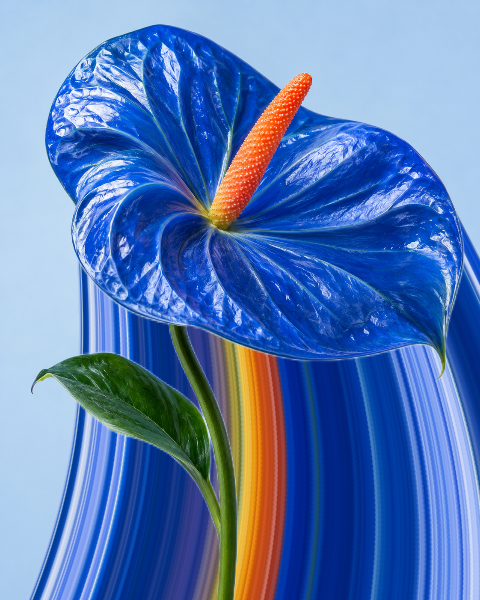

01
시작

너의 순간을,
조금 더 길게.
사진 속 색을 펼쳐 만드는
나만의 픽셀 스트레치.
yourcolor - 나만의 pixel stretch
사진 속 색을 펼쳐 만드는 나만의 픽셀 스트레치.
무료 · 계정 없음 · 사진은 브라우저에서 처리
사진 속 색을 펼쳐 만드는
나만의 픽셀 스트레치.
마음에 드는 한 장이면 충분해요.
샘플 사진을 준비하고 있어요…
사진을 고른 뒤, 원하는 방향으로 늘려보세요.
사진은 4:5로 채워져요. 가장자리가 일부 잘릴 수 있어요.
사진은 브라우저 안에서만 처리돼요. JPG·PNG·WebP, 최대 30MB.
피사체는 그대로, 분위기는 다르게.
HOW IT WORKS
yourcolor는 사진에서 고른 한 줄의 실제 색을 늘려 새로운 구도를 만듭니다. 피사체는 앞에 남기고, 효과는 직접 조절할 수 있어요.
내 사진을 불러오거나 샘플로 시작하세요. 사진은 4:5 비율로 중앙을 채웁니다.
위·아래·왼쪽·오른쪽 방향과 길이, 직선·펼침·곡선 모양을 골라보세요.
피사체 영역을 브러시로 보정한 뒤 워터마크 없는 JPG를 다운로드하세요.

GOOD TO KNOW
아니요. 사진 선택, 피사체 분리, 편집은 이 브라우저에서 실행됩니다. 계정과 업로드 서버를 사용하지 않습니다.
30MB 이하의 JPG, PNG, WebP 사진을 선택할 수 있습니다. 결과는 1440 × 1800 픽셀 JPG로 다운로드됩니다. 편집 과정에서 사진은 최대 960 × 1200 픽셀로 맞춰져 큰 원본의 세부 묘사는 줄어들 수 있습니다.
자동 분리 후 ‘피사체’ 도구에서 보호할 영역을 칠하거나 지울 수 있습니다. 머리카락이나 복잡한 배경은 직접 보정해 주세요.
현재 편집 내용은 브라우저 메모리에만 있습니다. 새로고침하거나 탭을 닫으면 사라지므로 완성한 JPG를 저장해 주세요.